고장 난 작업실·다리 건축가·하루 상점·위기 대응 센터·마을 중재소. 혼자 탐색은 10분, 문제마다 최대 3번 시도, 넘어가기 가능.
현재 구현해결 품질·풀이 시간·재도전·직접 실험·선택 변경·중도 이탈과 플레이 후 2문항(다시 하고 싶은지·부담감) 기록.
현재 구현CAN·LIKE·TRY·AVOID 분리, 근거 타임라인, 근거를 인용하는 AI 자기이해 리포트.
현재 구현관찰된 직무 행동이 쓰이는 직업을 적합도 없이 제시. 직업 DB는 12개 샘플.
구현 공공 API 예정게임 밖 20분 미션. 개발자 Lv.1·Lv.2 심화, 그 외 직업은 AI 맞춤 탐색 미션. 결과가 다시 근거로 저장.
현재 구현↺ REAL QUEST 결과는 근거 보관함에 다시 쌓입니다 · 상시 ‘도움 연결’(109 · 1577-0199 · 129 · 1388) · 기록 활용 동의 · 본인 기록 삭제
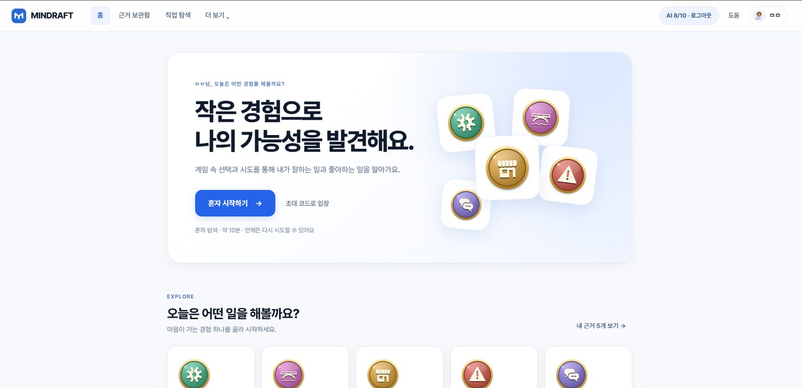
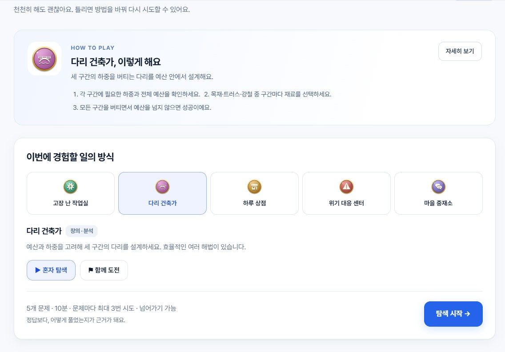
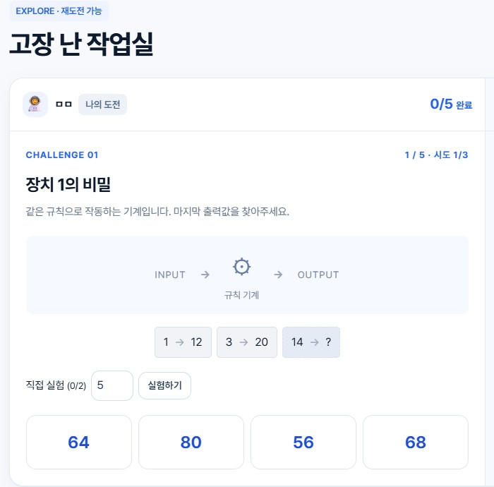
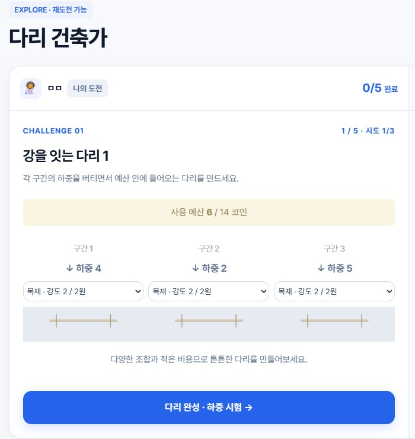
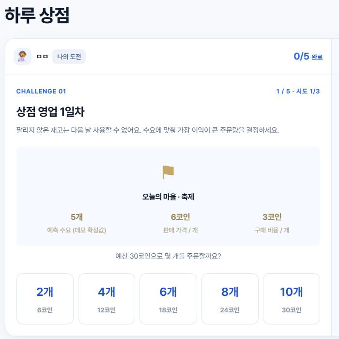
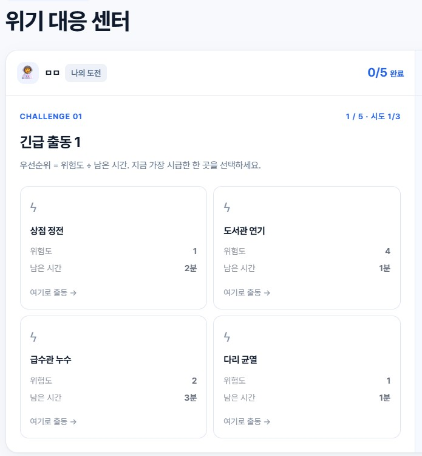
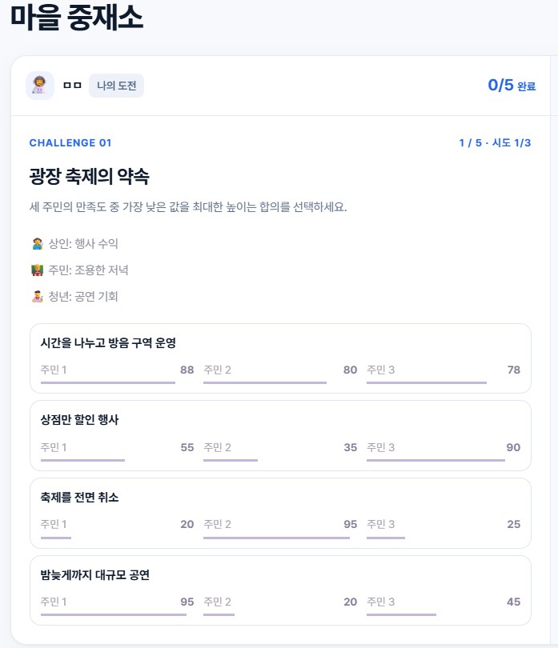
모든 게임 화면에 “틀려도 괜찮아요 — 다시 시도, 방법 바꾸기, 직접 실험 모두 TRY 근거로 기록돼요”가 표시됩니다. 점수·순위가 아니라 과정을 기록하는 것이 기존 진로 검사·경쟁형 게임과의 차이입니다.
| 계층 | 구성 |
|---|---|
| 프런트 | Vanilla JS SPA, Socket.IO client, Firebase Auth SDK(esbuild 번들) |
| 백엔드 | Node.js 22, Express 5, Socket.IO 4 |
| AI | Gemini 3.1 Flash-Lite(운영), Claude 어댑터, 규칙 기반 폴백 |
| 저장·인증 | Cloud Firestore, Firebase Auth(Google) |
| 배포 | Docker → Cloud Run, Cloudflare Worker 도메인 연결 · 헬스체크 /api/health |
| 이전 예정 | 민관협력 플랫폼 클라우드(NCP/KT/NHN) |
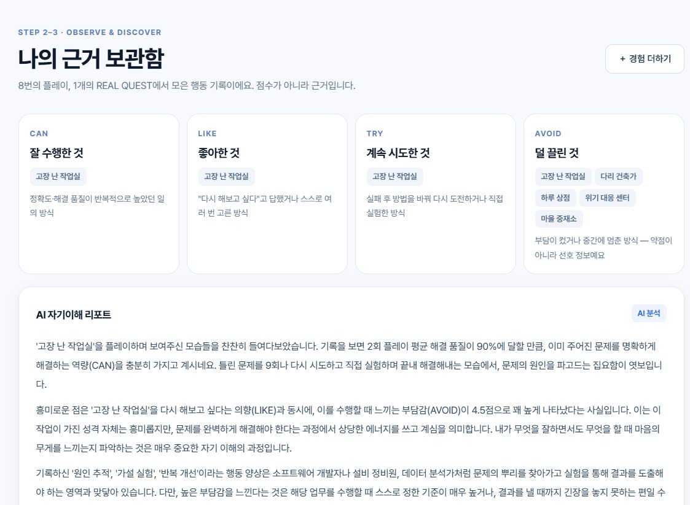
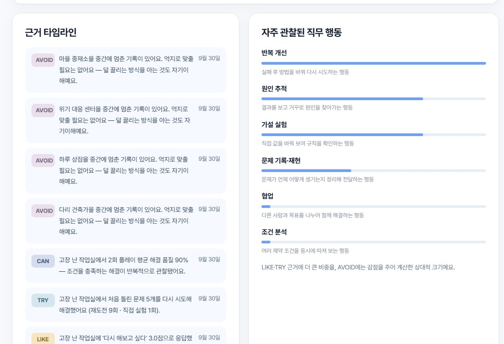
| 분면 | 판정 규칙 (게임 단위, insight.js) |
|---|---|
| CAN | 완료 판의 평균 해결 품질 ≥ 75% |
| LIKE | ‘다시 해보고 싶다’ ≥ 4점, 또는 스스로 3회 이상 선택 |
| TRY | 처음 틀린 뒤 재해결 ≥ 1 · 재도전 ≥ 2 · 직접 실험 ≥ 4 · 어려운 판 뒤 재도전 중 하나 |
| AVOID | 의향 ≤ 2 · 부담 ≥ 4 · 최근 판 중도 이탈 중 하나 (약점이 아닌 선호 정보) |
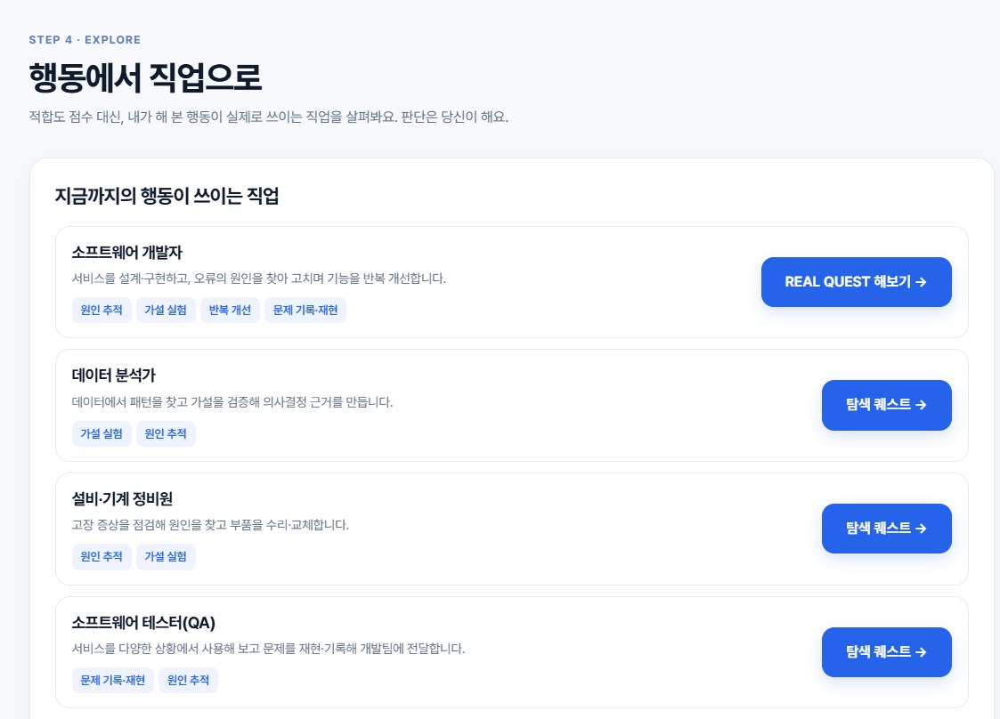
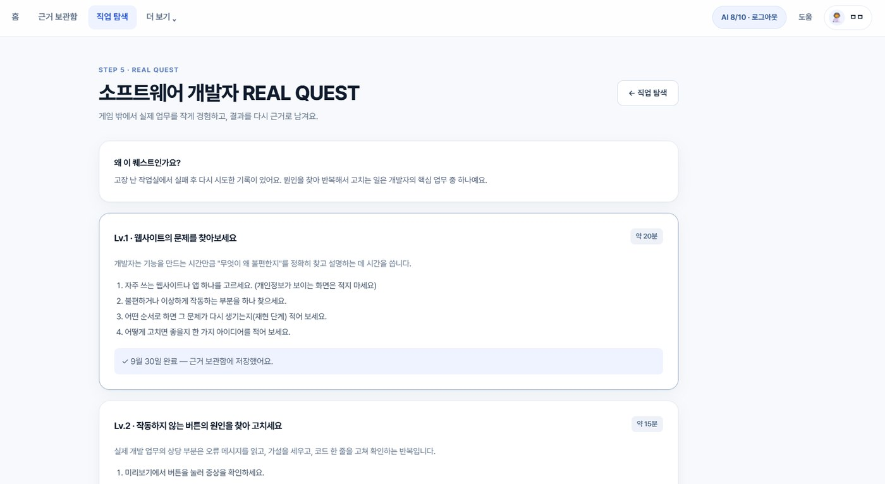
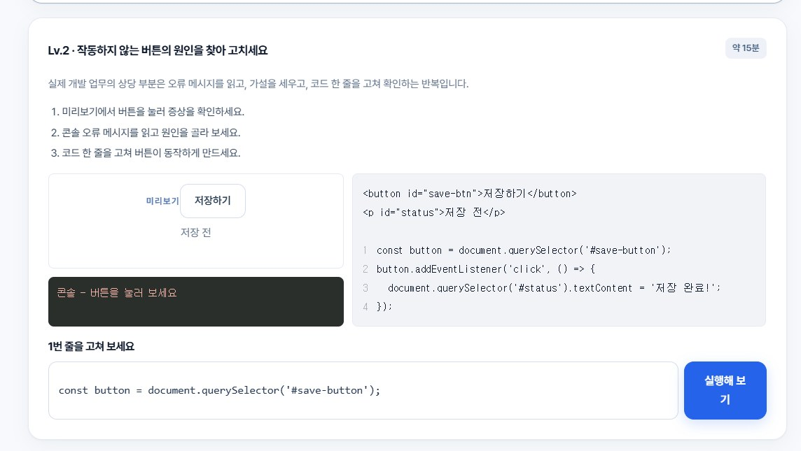
| 검증 영역 | 건수 | 확인한 내용 |
|---|---|---|
| 5종 게임 완주 | 5 | 게임별 2인 완주 → 결과·능력치·재경기·프로필 복원 |
| 서버 권위·부정 방지 | 4 | 카운트다운 전·중복 제출과 점수 위조 거부, 시간 종료 시 미응답 처리(근거 없는 XP 없음), 잘못된 다리 재료 거부, 반복 플레이 보상 감소 |
| 실시간 방·연결 | 5 | 접속자 목록·초대·수락 동기화, 호스트 권한·준비·정원, 호스트 이양, 다중 탭·재접속 방 복구, 연결 끊김 후 유령 접속자 제거 |
| 근거 분석 | 3 | 재도전 힌트가 정답을 숨김, TRY 근거·리포트 생성, 중도 이탈 → AVOID, ‘잘함≠좋아함’ 차이 발견·적합도 대신 행동 근거로 직업 제시 |
| REAL QUEST | 1 | Lv.1 서술 검증 → Lv.2 원인·수정 검증 → 근거 보관함 기록 |
| 동의·인증·삭제 | 3 | 기록 활용 동의 없이는 프로필 생성 불가, 잘못된 토큰 소켓 거부, 삭제 후 같은 토큰 접속 불가 |
운영 서버 점검 — 2026-09-30 GET https://mindraft.yoosung.dev/api/health → {"ok":true,"ai":true} (서버 가동·AI 연결 확인). 사용자 대상 사용성 테스트는 아직 실시하지 않았으며 예정 항목입니다.
| 영역 | 현재 (구현·운영 중) | 예정 (미구현) |
|---|---|---|
| 서비스 흐름 | 현재 STEP 1~5 전 구간 동작. 혼자 탐색·함께 도전·협동, 플레이 후 자기평가, 근거 보관함, 직업 탐색, REAL QUEST | 예정 청년 사용자 테스트(2회) 결과로 문구·난이도 보정 |
| AI | 현재 Gemini 리포트·맞춤 미션, 근거 인용·금지 표현 프롬프트, 실패 시 규칙 기반 폴백, 계정당 10회 제한 | 예정 근거 인용 비율·금지 표현 자동 검증, 플랫폼 제공 AI API 어댑터 |
| 직업·퀘스트 | 현재 12개 샘플 직업, 개발자 Lv.1·2 심화, 그 외 직업은 AI 맞춤 탐색 미션 | 예정 고용24·커리어넷 API 연동, 직군별 심화 퀘스트, 현직자 검수 |
| 로그인·저장 | 현재 익명 닉네임 + Google 로그인(Firebase), Firestore 저장, 본인 기록 삭제 | 예정 카카오·네이버 간편 로그인 |
| 도움 연결 | 현재 상시 ‘도움’ 창구 안내(109 · 1577-0199 · 129 · 1388), 청년미래센터 안내 문구 | 예정 지도 API 기반 인근 청년센터·고용센터 안내, 기관 자문 반영 |
| 인프라 | 현재 Cloud Run 서울 단일 인스턴스, 실시간 방 상태는 서버 메모리(배포·재시작 시 진행 중 방 종료) | 예정 민관협력 플랫폼 클라우드로 컨테이너 이전, 방 상태 외부화(다중 인스턴스) |
| 협력·확산 | — | 예정 대학일자리플러스센터·지역 청년센터 파일럿, 기관용 대시보드 |
※ 12개 직업 DB와 직무 설명은 MVP 샘플입니다. 이 서비스는 진단·적성 판정·적합도 산출을 하지 않으며, 공공 지원기관을 대체하지 않고 그 이전 단계의 저강도 온라인 진입로를 목표로 합니다.
https://mindraft.yoosung.dev — 닉네임만으로 입장, 상단 ‘도움’에서 상담 창구 확인.npm test → 21개 통과. 공개 서버 통신 확인 스크립트 npm run test:public 보유.server.js, lib/*.js, Dockerfile, cloudflare/worker.js, docs/google-cloud-deploy.md.